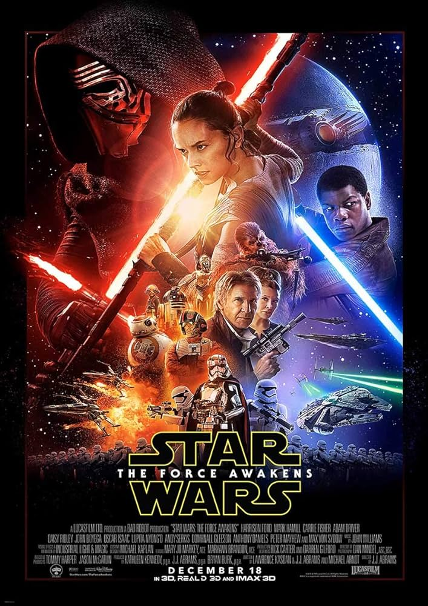
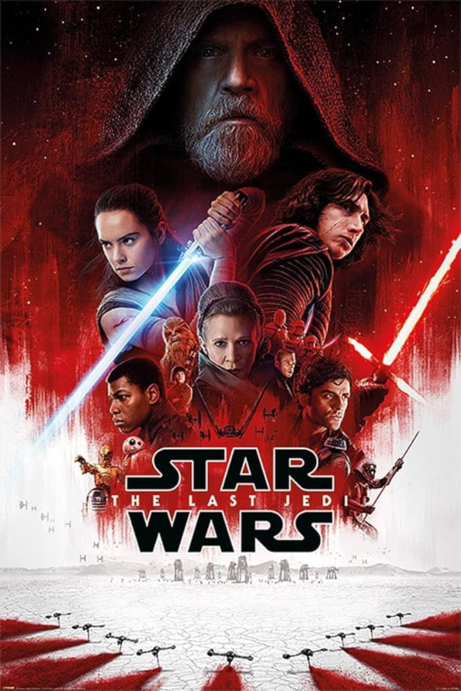

Postlogie
Épisode VII, VIII, IX
Star Wars, épisode VII : Le Réveil de la Force

- Titre original:
- Star Wars: Episode VII – The Force Awakens
- Réalisation:
- J. J. Abrams
- Scénario:
- J. J. Abrams
- Lawrence Kasdan
- Michael Arndt
- Musique:
- John Williams
- Sociétés de production:
- Lucasfilm Ltd
- Bad Robot Productions
- Genre:
- Science-fiction
- Durée:
- 138 minutes
- Sortie:
- 2015
Synopsis
"Star Wars, épisode VII : Le Réveil de la Force" se déroule environ 30 ans après les événements de "Le Retour du Jedi". La galaxie est confrontée à une nouvelle menace : le Premier Ordre, héritier de l'Empire, cherche à établir son contrôle sur la galaxie, tandis que la Résistance, dirigée par la Générale Leia Organa, s'oppose à ses plans. Une carte menant à la localisation du légendaire Jedi Luke Skywalker est convoitée par le Premier Ordre et la Résistance. Rey, une jeune ferrailleuse sur la planète désertique Jakku, découvre un droïde nommé BB-8, porteur d'une partie de cette carte. Finn, un stormtrooper en fuite du Premier Ordre, rencontre Rey et BB-8, et ils s'associent pour échapper aux forces ennemies. Ils rencontrent Han Solo et Chewbacca, qui les aident dans leur quête pour trouver Luke Skywalker. Kylo Ren, un chevalier Sith du Premier Ordre, cherche également à localiser Luke pour éliminer toute menace potentielle pour l'ordre établi par le Premier Ordre. La quête pour retrouver Luke Skywalker mène à des confrontations intenses entre la Résistance et le Premier Ordre. Rey découvre ses propres capacités à manier la Force, tandis que Kylo Ren montre des signes de conflit intérieur entre le côté lumineux et le côté obscur. L'épisode se termine sur une note poignante lorsque Rey trouve enfin Luke Skywalker sur une île isolée, marquant le début d'une nouvelle ère pour les Jedi et la continuation de la lutte entre le bien et le mal dans la galaxie.Star Wars, épisode VIII : Les Derniers Jedi

- Titre original:
- Star Wars: Episode VIII – The Last Jedi
- Réalisation:
- Rian Johnson
- Scénario:
- Rian Johnson
- Musique:
- John Williams
- Sociétés de production:
- Lucasfilm Ltd
- Walt Disney Pictures
- Ram Bergman Productions
- Genre:
- Science-fiction
- Durée:
- 152 minutes
- Sortie:
- 2017
Synopsis
"Star Wars, épisode VIII : Les Derniers Jedi" se déroule après les événements de "Le Réveil de la Force". La Résistance, dirigée par Leia Organa, est traquée par le Premier Ordre. Rey, ayant retrouvé Luke Skywalker, cherche à le convaincre de rejoindre la lutte contre le Premier Ordre et à comprendre la Force. Pendant ce temps, Kylo Ren, influencé par le Suprême Leader Snoke, est aux prises avec des conflits intérieurs. L'épisode explore les nuances du côté lumineux et du côté obscur de la Force, mettant en lumière les liens entre Rey et Kylo Ren, ainsi que leurs destins entremêlés. Des batailles épiques ont lieu, notamment une confrontation majeure entre la Résistance et le Premier Ordre. L'épisode se concentre sur le dilemme moral des personnages principaux, leurs choix et leurs défis personnels. Il approfondit également la philosophie de la Force, remettant en question les traditions Jedi et Sith. L'épisode se termine sur des notes de sacrifice, de rédemption et de renouveau, ouvrant de nouvelles perspectives pour l'avenir de la saga tout en laissant les fans avec des questions sur le destin de certains personnages.Star Wars, épisode IX : L'Ascension de Skywalker

- Titre original:
- Star Wars: Episode IX – The Rise of Skywalker
- Réalisation:
- J. J. Abrams
- Scénario:
- J. J. Abrams
- Chris Terrio
- Musique:
- John Williams
- Sociétés de production:
- Lucasfilm Ltd
- Bad Robot
- Walt Disney Pictures
- Genre:
- Science-fiction
- Durée:
- 141 minutes
- Sortie:
- 2019